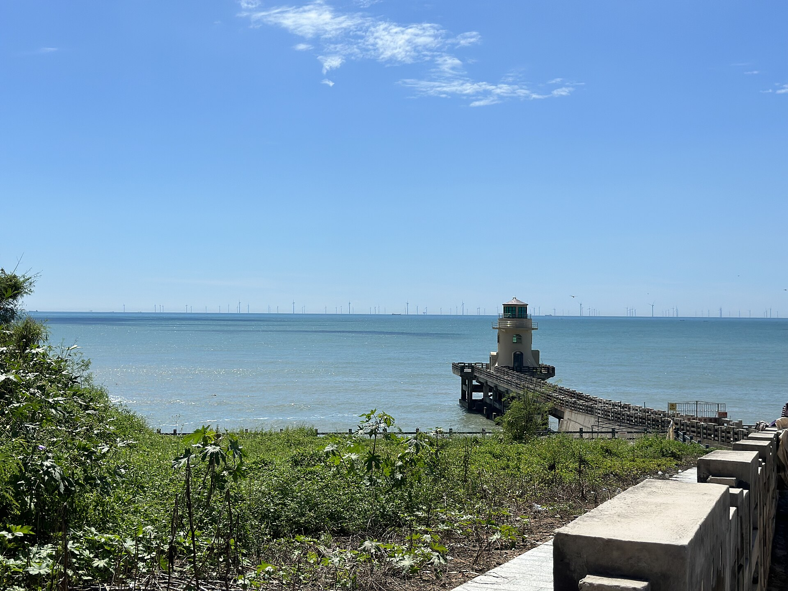
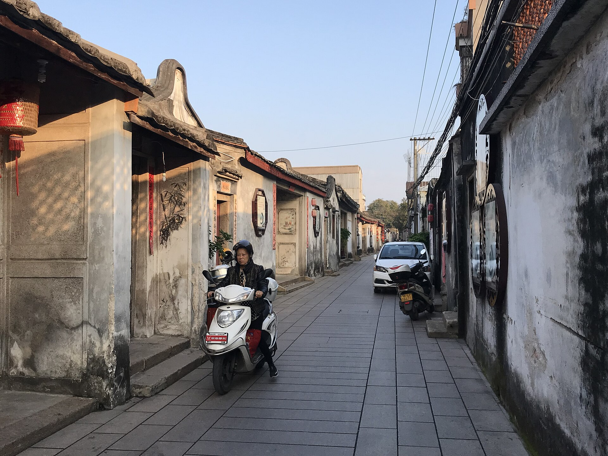

EXPLORE & SHOP LOCAL
潮汕五大逛街漫步與特色商圈走讀指南
精選歷史騎樓、文創手作街、年輕人深夜夜市與高端購物商場，讓慢步、淘寶、品茶與掃街一次滿足！

實景：汕頭鎮邦路騎樓街（老字號招牌與紅燈籠）
歷史文化 ✕ 非遺美食街
汕頭市金平區
小公園騎樓商圈 ✕ 鎮邦路美食街
以中山紀念亭為圓心，放射狀展開的安平路、國平路聚集了老牌金銀首飾、南洋參茸海味、潮繡手作行。緊鄰的鎮邦路美食街由政府整合數十家潮汕老字號，夜間復古霓虹閃爍，極具氛圍。
🛍️ 必逛推薦：汕頭郵政總局舊址文創店、老字號南生貿易大樓、飄香小食店。
🪧 路牌對照：鎮邦路 ZHENBANG RD.

實景：潮汕夜市掃街實景（攤販燈箱與人潮）
在地老饕 ✕ 深夜掃街聖地
汕頭市金平區
龍眼南路美食步行街
汕頭在地青年最熱愛的宵夜掃街第一街！整條街延綿數百公尺，匯集最地道的小吃攤：現點現炸金黃普寧豆乾、反沙芋頭番薯、十二中特濃草莓冰、龍眼豆花與金二生醃。
🍢 必吃名攤：十二中草莓冰、普寧豆腐西施、小吳腸粉、老牌反沙芋。
🪧 路牌對照：龍眼南路 LONGYAN SOUTH RD.

實景：汕頭市區夜景（萬象城所在龍湖區）
高端購物 ✕ 黑珍珠潮菜聚落
汕頭市龍湖區
萬象城 (The MixC) ✕ 時代廣場
粵東面積最大、品牌最齊全的高端購物殿堂。雲集國際精品、潮流品牌與頂級黑珍珠餐飲，引進了「日日香鵝肉飯店萬象旗艦店」、茶飲新寵、西西弗書店與潮汕非遺選品店。
☕ 精品茶飲：喜茶、奈雪、茉莉奶白、茶理宜世、潮汕本地單樅特調。
🪧 路牌對照：金砂東路 JINSHA EAST RD.

實景：潮州老城古民居建築群（西馬路一帶）
千年非遺 ✕ 百年手作手信
潮州市湘橋區
牌坊街 ✕ 西馬路古街
若說牌坊街是潮州文化的大客廳，西馬路就是最接地氣的市井百寶箱！整條西馬路保留著原汁原味的清末民初風貌，雲集古法現炸厚記春餅、現包肖米、筍粿、手拉朱泥壺大師工作室與老字號佛手老香黃專門店。
🏺 工藝淘寶：國家級非遺手拉朱泥壺、潮繡壁掛、手作烏木雕刻。
🪧 路牌對照：西馬路 XIMA RD.

實景：南澳島錢澳灣燈塔與礁石海岸
海風漫步 ✕ 漁港乾貨特產
汕頭市南澳縣
後宅鎮海濱路海風街
南澳島政治經濟文化核心，傍晚落日時分沿著海濱長廊散步吹海風，欣賞海面點點漁火。街旁排列著整齊的南澳水產乾貨市場，是採買正宗「南澳頭水紫菜」、野生烤魷魚絲與蝦米的最佳去處。
🦀 伴手採買：南澳頭水紫菜（真空包裝）、特產魚膠、乾貝。
🪧 路牌對照：海濱路 HAIBIN RD.

實景：潮州甲第巷青石板古巷與明清府邸
豪門府邸 ✕ 慢調文創茶室
潮州市湘橋區
甲第巷與十巷探幽
「京華帝王府，潮州百姓家。」甲第巷、猷巷、灶巷是昔日潮州官宦世家聚居之地，集中了數十座「駟馬拖車」、「四點金」明清豪宅。如今巷弄裡隱藏著許多靜謐的私房工夫茶館、手作陶藝室與獨立文創空間。
🍵 漫步亮點：資政第木雕門匾、古宅天井工夫茶、老井歲月痕跡。
🪧 路牌對照：甲第巷 JIADI LN.